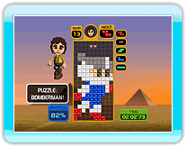

Played with standard Tetris rules. Stack Tetriminos as
they appear one after another
and eliminate them. It's game over when the blocks stack up to the top of the Matrix
where the Tetriminos appear. When Endless is OFF, aim for a high score by clearing 150 lines in the best time. When Endless is ON, aim for a high score by playing as long as you can.

Played with standard Tetris
battle rules. Face off against the computer as you both attempt to clear lines. The first to force the opponent into a game over situation is the winner. Clear lines to send lines into an opponent's Matrix. There are 15 computer
players (Lv 1 to 15) and the wins and losses against each are individually recorded in Personal Records.

Position Tetriminos to fill in the shadow on the Matrix and create the specified shape. It doesn't matter how low your completion rate is; you just need to fill in the entire shadow to clear the stage. Go for the best time and the best completion level on each stage to get the highest score. You only have 3 minutes to clear each stage.

Guide a dropping Tetrimino
along a forced scrolling field to descend to a goal point located 400 lines
below. It's game over if your Tetrimino gets caught along the way and scrolled out of the screen. Aim for the high score by being the quickest to reach the goal.